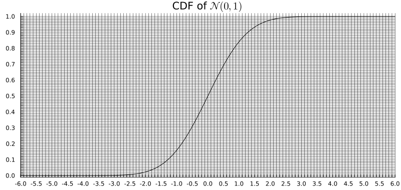

TD2: Gaussian Populations
Distributions to be known
| Distribution | Support | Gaussian approximation |
|---|---|---|
| \(\chi^2(k)\) | \(\mathbb{R}_+\) | \(\mathcal{N}(k,\, 2k)\) |
| \(t(\nu)\) | \(\mathbb{R}\) | \(\mathcal{N}(0,\, 1)\) for large \(\nu\) |
| \(F(n_1,n_2)\) | \(\mathbb{R}_+\) | \(\mathcal{N}\!\left(1,\, \frac{2}{n_1}+\frac{2}{n_2}\right)\) for large \(n_1,n_2\) |
Exercise 0: \(2\sigma\)-Game
For each distribution \(P\), compute the \(2\sigma\) interval \([\mu - 2\sigma,\, \mu + 2\sigma]\) using the Gaussian approximation, and indicate whether \(x_\mathrm{obs}\) falls inside or outside.
- \(P = \chi^2(20)\), \(x_\mathrm{obs} = 321\)
- \(P = \chi^2(100)\), \(x_\mathrm{obs} = 95\)
- \(P = t(30)\), \(x_\mathrm{obs} = 0.5\)
- \(P = t(50)\), \(x_\mathrm{obs} = 6.1\)
- \(P = F(10, 30)\), \(x_\mathrm{obs} = 5\)
- \(P = F(20, 20)\), \(x_\mathrm{obs} = 1.2\)
Exercise 1
A bread manufacturing factory wants to establish control procedures with the primary goal of reducing overproduction issues, which result in losses for the factory. Here, we focus on the weights of baguettes produced by the factory, with a target weight of \(250\) grams. For a sample of \(n = 30\) baguettes, the empirical mean is \(\bar{X}_n = 256.3\) and the empirical variance is \(S^2_n = 82.1\).
A priori, the factory reaches the target weight of \(250\) grams. We aim to test at significance level \(\alpha = 0.01\) whether there is an overproduction issue.
Is this a one-sided (unilatéral) or two-sided (bilatéral) testing problem?
Formulate the hypothesis testing problem: define the parameters of the model, the corresponding distributions (specifying which parameters are known and which are unknown), and write \(H_0\) and \(H_1\) as well as the corresponding parameter sets \(\Theta_0\) and \(\Theta_1\).
What is the test statistic to use, and what is its distribution under \(H_0\)? Note: since \(\sigma^2\) is unknown, explain why a \(t\)-test is appropriate here.
Determine the rejection region.
Does the factory have an overproduction issue?
Exercise 2
We want to test the precision of a method for measuring blood alcohol concentration on a blood sample. Precision is defined as twice the standard deviation of the method (assumed to follow a Gaussian distribution). The reference sample is divided into \(6\) test tubes, which are subjected to laboratory analysis. The following blood alcohol concentrations were obtained in g/L: \[ 1.35, \quad 1.26, \quad 1.48, \quad 1.32, \quad 1.50, \quad 1.44. \]
We aim to test the hypothesis that the precision is greater than \(0.1\,\text{g/L}\) (i.e. that the method is not precise enough).
Formulate the hypothesis testing problem. Note that “precision \(\leq 0.1\) g/L” means \(2\sigma \leq 0.1\), i.e. \(\sigma^2 \leq \sigma_0^2 = 0.0025\). Write \(H_0\), \(H_1\), \(\Theta_0\), and \(\Theta_1\).
Write the test statistic and give its distribution under \(H_0 : \sigma^2 = \sigma_0^2\).
Perform the test at a significance level of \(\alpha = 0.05\).
Show that the p-value of this test lies between \(0.001\) and \(0.01\). Use the fact that \(\chi^2_5(0.99) \approx 15.09\) and \(\chi^2_5(0.999) \approx 20.52\).
Exercise 3
A candidate for the European elections wants to know if their popularity differs between men and women. A survey was conducted with \(250\) men, of whom \(42\%\) expressed support for the candidate, and \(250\) women, of whom \(51\%\) expressed support.
Formulate the hypothesis testing problem. Let \(p_m\) and \(p_w\) denote the true proportions of support among men and women respectively.
To test \(H_0: p_m = p_w\), use the pooled proportion \(\hat{p} = (\hat{p}_m + \hat{p}_w)/2\) to estimate the common variance under \(H_0\), and build a \(z\)-statistic. At significance level \(\alpha = 0.05\), is the difference statistically significant?
Give the p-value as \(2F(z_\mathrm{obs})\) where \(F\) is the CDF of \(\mathcal{N}(0,1)\) and \(z_\mathrm{obs} < 0\), and read it on the graph below.

Exercise 4
We aim to compare the average daily durations (in hours) of home-to-work commutes in two departments, labelled \(A\) and \(B\). We randomly surveyed \(26\) people in \(A\) and \(22\) in \(B\). Let \(X_i\) be the commute duration of person \(i\) in department \(A\), and \(Y_j\) that of person \(j\) in department \(B\). We assume the samples are i.i.d. and Gaussian: \[ X_i \sim \mathcal{N}(\mu_A,\, \sigma_A^2) \quad \text{and} \quad Y_j \sim \mathcal{N}(\mu_B,\, \sigma_B^2). \]
Here is a summary of the data:
| Department \(A\) | Department \(B\) | |
|---|---|---|
| Sample size | \(n_A = 26\) | \(n_B = 22\) |
| \(\sum x_i\) | \(533\) | — |
| \(\sum y_j\) | — | \(396\) |
| \(\sum x_i^2\) | \(11626\) | — |
| \(\sum y_j^2\) | — | \(7590\) |
Formulate the hypothesis testing problem for comparing the two means.
Test the equality of variances \(H_0: \sigma_A^2 = \sigma_B^2\) at significance level \(\alpha = 0.1\), using an \(F\)-test. What do you conclude for the choice of test in Q3?
Using the conclusion of Q2, test the equality of mean commute times \(H_0: \mu_A = \mu_B\) at significance level \(\alpha = 0.05\), and conclude.
Give a Gaussian approximation of the test statistic using the CLT and the LLN, and approximate the p-value using the graph of the CDF of \(\mathcal{N}(0,1)\) from Exercise 3.